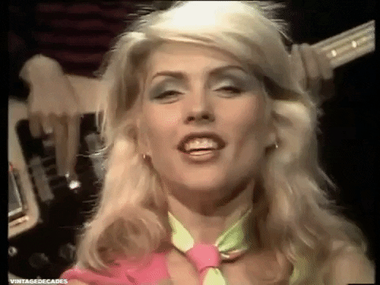

I'm not sick but i'm not well
My journey with Hodgkin Lymphoma
I'm 31-years-old and I have been diagnosed Hodgkin lymphoma - (yes, the same one as Delta Goodrem).

I don’t drink, don’t smoke and I eat relatively well (I eat a bit of everything).
So how does someone that feels “healthy and normal” discover that they have cancer?
The discovery:
Ok so, at the beginning of the year my skin was itchy and thought it must be allergies or perhaps a reaction to ‘the pill’. The doctor thought the same so gave me some cream but the only thing that helped was antihistamine hay fever tablets and clove oil (clove oil is useful to have around).
Then in May, I then discovered a small lump (half the size of a golf ball) on my left neck / collarbone area. It wasn’t sore and I felt well. I heard that cancer lumps are not necessarily painful, and you don’t always feel sick unless it’s at an advance stage.
Therefore, I knew to take the lump seriously - But
I ‘‘realistically’’ thought I had injured my collarbone playing golf or something (wishful thinking I guess).
As I was doctors following up my itching skin, I also mentioned my lump. She explained to me that back lumps are normally superficial but mine is at the front and worth getting an ultrasound and a blood test. The doctor mentioned it could be a cancer or perhaps some sort of other inflammation.
The diagnoses:
This marked the beginning of a lengthy diagnoses. Blood test results showed healthy and normal range (lymphoma cannot be detected by blood), ultrasound should a few small clusters of lumps. Next steps were to undergo a CT scan to provide more detail information. CT scan showed clusters on the neck and some around my chest.
I never get use to tunnel scans, I close my eyes and pretend that I’m on a beach tanning.
I was then refereed to the Peter Mac Cancer Centre and of course I knew I was in the best hands. At this stage I still felt like I had a 50/50 chance of this not being cancer. The physician explained to me that’s there’s no way of telling for sure until we can an accurate biopsy. He explained to me given the results of the CT scan could be stage 2 lymphoma as it’s all contained in the upper region and that the itchy skin could be a sign of lymphoma (surprise)! He also mentioned the possibility of sarcoidosis – another serious immune condition.
Throughout the weeks ahead I underwent numerous checks (and to help rule out other cancers) – nasal and throat assessment, mammogram, ultrasound on thyroid, fine needle biopsy (unable to determent results), a PET scan and the finally a core biopsy.
Getting the core biopsy was rather intense experience (but less painful than the dentist in my experience). The doctor took longer than expected as he had to craft his way around my artery and was selective with the sample of tissue taken.
I’m glad they had the radio on as it was a great distraction listing to Blondie and talking to the doctor and nurses.

Finally come July 21 I was given results on the core biopsy and were able to confirm that I had lymphoma. The next day I saw the haematologist and he was able to inform me of the exact diagnosis
–‘Classical Hodgkin lymphoma stage 2, type A, unfavourable’.
Even though I knew the outcome would most likely lead to this, it was only till I got this confirmation it then hit me. For four days straight I was shaking and knew that I needed to process my emotions in order to get into a better mind frame. I wanted to hide away and ideally would’ve loved a small getaway before treatment started – but you know COVID times. I had a lot of good support around me – even though somewhat eery to receive ‘get well’ gifts while feeling ‘well’ – it really did helped feeling loved and supported my ones that mean most to me.
Treatment planning:
The haematologist explained the different treatment pathways, and in particular two:
- [ABVD] 6 months of treatment
- with a 90% success rate, a less aggressive treatment (slight chance of radiotherapy) - [BEACOPP & ABVD] 14 weeks short aggressive
- treatment 95% success rate (less chance of radiotherapy).
Both good choices but ideally best to avoid radiation around main organs such as my lungs and heart.
At first, I thought the less aggressive treatment as I wanted to be less risk of infections, but at the same time liked the idea of being able to complete treatment before the end of year. Either way I was happy to for the group of doctors to have a meeting to discuss my case and get back to me about their opinion.
– The nurse was also there to give me more information and her contact.

I was also given the option of some fertility care – freezing the eggs or an injection to put the ovaries on pause. I did opt-in for the injection to stop menstrual cycle and to help avoid early menopause (but nothing is guaranteed).

The nurse also put me onto the Lymphoma Down Under Facebook community page that has been a massive support group.
A week later I got my treatment recommendation to go ahead with BEACOPP & ABVD (aggressive but shorter option). I was happy and had complete faith with the doctors recommendations.
At least I have shorter treatment to allow me to recover quicker. I had about under 3 weeks to begin treatment.
During this time, I could focus on my health, I had a lot of great recommendations from family and friends and some of them whom had gone through their own battle with cancer.
Treatment:
- 2 cycles of BEACOPP. (At the end of second cycle the objective is to have a clear PET scan).
- 2 cycles of ABVAD (if scan is all clear).
Cycle 1 - (21 days)
Cycle 2 - (21 days)
Cycle 3 - (28 days)
Cycle 4 - (28 days)
Summary:
The haematologist explained the different treatment pathways, and in particular two:
Recommendations:
The haematologist explained the different treatment pathways, and in particular two: